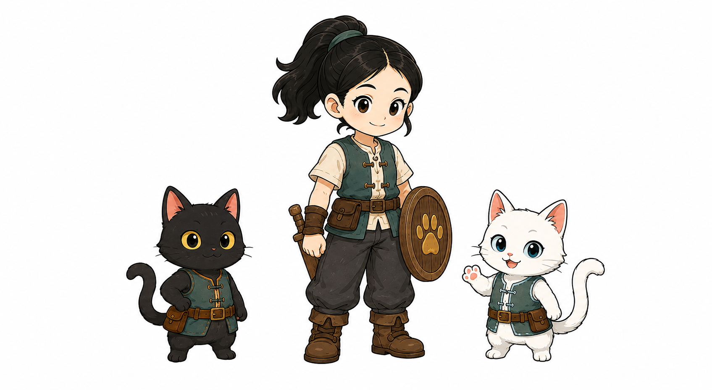

一位朵朵，两只猫咪
从家中的一个下午开始，朵朵和团团，要去接圆圆回家。
电脑键盘或手柄均可。单人战斗有 AI 协助，解谜由你亲自完成。序章过关与庭院休息点分别记录在当前浏览器；桌面版存档不会自动同步。

序章：朵朵收好本子，团团找回玩具，再去沙发边休息。单人只在朵朵、团团之间切换；圆圆在家中自由活动。序章没有战斗，完成后单独记录通关；重玩可在暂停菜单选择“重玩序章”。
单人：WASD 移动，E 互动，Tab 换角色。解谜 R 工具、Q 切回上一位；战斗 F 攻击、Q 闪避、按住 G 举盾。圆圆按住攻击后松开重拍；闪避可取消攻击收招和蓄力。团团扑击可打断施法，换圆圆接重拍。
双人：朵朵 WASD / E / F / Q / G；猫咪方向键 / 空格 / J / K，Tab 切猫，R 工具。
手柄：左摇杆移动，面键下互动、左攻击、右闪避、上换角色；右肩工具、朵朵左肩举盾。十字键选菜单，菜单键加入 / 准备 / 暂停。
Esc 暂停、Enter 继续。切出网页会暂停，回来后先点一下游戏画面。全屏时第一次 Esc 可能先退出浏览器全屏。
刷新或离开会丢失尚未完成的序章进度，或庭院尚未到休息点的本轮进度。请勿清除网站数据；不同浏览器、设备和无痕窗口的记录互不相通。